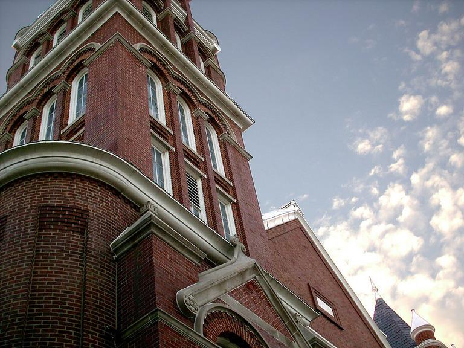

Computer Vision Assignment 1
Canny Edge Detector and Corner Detector
Robert Michaels, 2/5/15
Sorry for being a few minutes late. Had to re-run images, and it took me past the midnight deadline unfortunately. On my honor, I didn't touch the code after this time. I'm pretty satisfyied with how this turned out. Corner detection could have been a bit better, but I'm proud of it over all.
Organization:
main.py:
Calls a function that runs and generates all of the images. The parameters of this function and how they influence the output are as follows:
CONST_FILENAME: Name of the image to read in. In same directory as the main.py file. Generated pictures are placed in a folder named the filename with extension removed.
CONST_SIGMA: The width of the Gaussian computed. Higher values cause higher amounts of blur filtering, and thus also filters out smaller, less pronounced edges.
CONST_KWINDOW: The width of the Gaussian kernel. An odd integer, usually around 10. Wider kernels cause smoother blurring.
CONST_THI: High threshold for hysteresis thresholding. A fraction of the highest edge strength. Usually set at .3, so the high threshold would be .3*whatever the strongest edge pixel is.
CONST_TLO: Low threshold for hysteresis thresholding. Like THI, is also a fraction of the strongest edge. I like to tweak it around .1 to .15. Higher values leave less small edges.
CONST_CWINDOW: Width in pixels of covariance matrix/corner patch size in corner detection. Usually between 11 and 25. Larger sizes define more prominent features with less final corner points, but also take longer to calculate.
imagemanip.py:
Functions that produce images to show intermediate steps.
grad2rgb(image): Takes in one of the gradient results (Fx or Fy) and returns an image with green for positive values and red for negative.
addCorners(image, points, windowSize): Returns a copy of image with the corners overlaid. windowSize is the width of the corner patch
procAndWrite(filename, sigma, kernelWindow, t_high, t_low, cornerWindow): Main function to generate images seen later on the page. Each parameter corresponds to a constant in main.py
mathystuff.py:
This aptly named file does the bulk of the work, mathematically speaking
getGaussian(sigma, kernelSize, deriv, dimension): Returns a 1-D Gaussian kernal of specifications provided. deriv is a boolean, set to True if we want a first order derivative. Dimension is a character, either 'x' or 'y', for the orientation of the returned kernel.
buildXGauss(sigma, kernelSize, deriv): Helper for getGaussian, returns a 1XkernelSize Gaussian kernel.
buildYGauss(sigma, kernelSize, deriv): Helper for getGaussian, returns a kernelSizeX1 Gaussian kernel.
gaussian(x, sigma): Calcuates 1d G(x, sigma)
derivGaussian(x, sigma): Calculates 1d G'(x, sigma)
convolvedGradient(image, sigma, kernelSize): Convolves image with a Gaussian kernel of paramaters sigma and kernelSize. Returns a tuple of arrays, (Dx, Dy)
edgeStrength(gradient): Returns an array of the magnitude of Dx and Dy in provided gradient
normalOrientation(gradient): Returns an array of arctan(Dy/Dx)
squareDirections(orientation): Changes orientations to nearest 45 degree representation
squareAngle(angle): Returns closest 45 degree angle to a radian input
edgeSuppress(edges, directions): Returns edge-suppressed version of edges, directions are squareDirections output
check4Edge(edges, angle, row, col): Majority of edge suppression. Checks along angles, either returns edges[row][col]'s original value, or 0 if not a strong edge
edgeThreshold(edges, directions, t_high, t_low): Edge thresholding. Directions are squareDirections.
chain(outArray, edges, row, col, directions, t_low, visited): A pretty cool recursive function that creates the edges for the thresholding.
normalize(array): Divides all array elements by the max element. Woo.
eiganImage(gradient, windowSize): Returns an image of the min eiganval intensities with covariance matrix of width windowSize
eigan2Points(eiganImage, windowSize): Takes in eiganImage, returns a list of 3 tuples, (eigenval intensity, row, col) if intensity over a quarter of the max intensity
covarianceMat(gradient, windowSize, row, col): Returns covariance matrix for specified pixel and window. I really should have memoized these, as there is significant slowdown computing eiganvals
cornerSuppress(cornerList, windowSize, imgShape): Returns a new list of final corner points.
building.jpg
CONST_SIGMA = 2.0
CONST_KWINDOW = 7
CONST_THI = .3
CONST_TLO = .1
CONST_CWINDOW = 23
| Standard |
Greyscale |
|  |
|
| X Gradient |
Y Gradient |
|
|
| Edge Magnitude |
Suppressed Edges |
|
|
| Thresholded Edges |
Eiganvalues |
|
|
| with Corners |
|
mandrill.jpg
CONST_SIGMA = 5.0
CONST_KWINDOW = 15
CONST_THI = .3
CONST_TLO = .15
CONST_CWINDOW = 23
| Standard |
Greyscale |
|
|
| X Gradient |
Y Gradient |
|
|
| Edge Magnitude |
Suppressed Edges |
|
|
| Thresholded Edges |
Eiganvalues |
|
|
| with Corners |
|
Termina.png:
CONST_SIGMA = 1.5
CONST_KWINDOW = 9
CONST_THI = .3
CONST_TLO = .1
CONST_CWINDOW = 11
| Standard |
Greyscale |
|
|
| X Gradient |
Y Gradient |
|
|
| Edge Magnitude |
Suppressed Edges |
|
|
| Thresholded Edges |
Eiganvalues |
|
|
| with Corners |
|